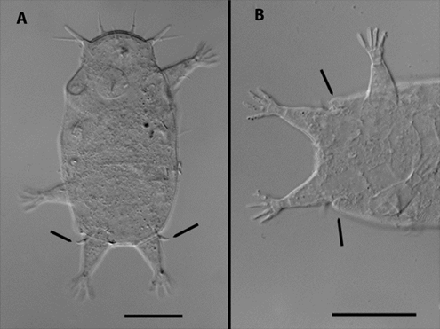

Tardigrades are microscopic animals that are known for their ability to survive in extreme conditions. They are found in moss, soil, freshwater, and ocean environments. They can withstand, cold head, radiation, dehydration, and even the vacuum of space. Despite their toughness they are fairly simple organisms and are about 0.1 - 1.2 milimeters long. There are more than 1,300 known species of tardigrades.
| Category | Information |
|---|---|
| Common Name | Water bear or moss piglet |
| Scientific Group | Phylum Tardigrada |
| Size | About 0.1 to 1.2 millimeters |
| Body | Plump body with eight legs |
| Habitat | Moss, lichen, soil, freshwater, and oceans |
| Diet | Algae, plant cells, bacteria, fungi, and tiny animals |
| Survival Ability | Can survive dehydration, extreme temperatures, pressure, and radiation |
| Dormant State | A dried and inactive form called a tun |
| Water Requirement | Needs water to be active and reproduce |
| Importance | They are part of microscopic food webs |
Tardigrades are found in a variety of environments, including moss, soil, freshwater, and ocean habitats. They are particularly common in areas with high humidity and can be found in both terrestrial and aquatic ecosystems. In the ocean, they are often found in the sediment or attached to marine plants. Tardigrades play an important role in their ecosystems by controlling the populations of the microorganisms they feed on.
Pictured below is actually a marine tarigrade found in South Carolina! Read more about it here.
